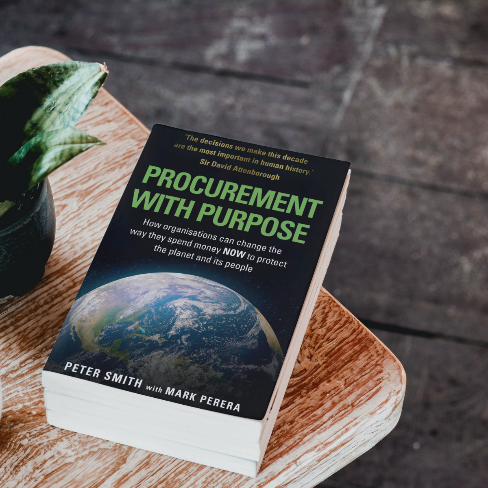

We recently spoke with Peter Smith, a leading UK procurement expert and author of Procurement with Purpose, to explore modern strategies for digital and technology procurement.
Peter shared stories from his career in both private and public sector procurement and offered insights on how to improve procurement outcomes by balancing cost, speed, and innovation. He also discussed the need for practical training that helps government buyers confidently embrace new technologies, including open-source solutions and AI.
Read on to hear more from Peter about the challenges and opportunities for public sector procurement and what we can learn from UK government procurement best practices.

How should we be measuring success in digital procurement?
All procurement is fundamentally about achieving value for money in what we’re buying. The challenge in buying any complex service such as digital technology is in defining that value. What we are really looking for is something that helps us achieve our goals and delivers the required outputs or outcomes. Clearly, it’s not simply about buying the cheapest tech, so the challenge is to balance cost against the benefits that the technology can bring. Value can also come from factors such as speed. We should be prepared to pay a little more if a supplier can deliver something in a month rather than a year, assuming the end product brings our organisation some benefits. Actually, that speed factor is often not really considered when supplier selection decisions are made, and it should be.
Do you see AI playing a larger role in government procurement?
Yes, definitely. The biggest gain will be using AI to draft tender and contract documents. We will still need to have some human input but putting together a medium-sized tender can take many days or even weeks of effort. That should be cut substantially. Using AI in evaluating bids is more contentious and I think AI can be used carefully and sparingly. Then there are opportunities in the area of contract management and compliance, in detection of fraud and corruption, and perhaps most strategically, AI may help us identify the best products and suppliers to meet our needs, including suppliers we don’t know already or those who might not usually bid for public sector work.
What do you see the struggles are with governments purchasing AI products or services?
I think the biggest issue is just asymmetry of information. In other words, the supplier understands a lot more about their product than we do on the buy side. And frankly, in the public sector particularly, the general level of knowledge and skills in terms of the latest tech thinking and products is somewhat lacking. Buying AI products and services is not intrinsically that different to buying other technology, but the need to understand what you’re buying is fundamental to successful procurement.
How can data analytics be used to track procurement performance and identify areas for improvement?
We haven’t been very good at using analytics to track procurement performance. I’ve seen some attempts to measure time taken to run a public end-to- end procurement process — but that doesn’t tell you anything about whether the end result was successful. And certainly we’ve been poor in the UK at least at reviewing and analysing whether a procurement exercise was well run and gave successful outcomes. I’d like to see more formal post-event reviews — with the results in the public domain. Even when a procurement has ended up with a supplier suing the buyer in court, and the buying organization loses, often it is bound by confidentiality and we don’t even find out why a large amount of taxpayer money has been paid to the firm that complained!
How do you think government procurement compares to the private sector?
Well there is more process of course on the government side. I think probably the best and the worst procurement I have seen has been in the private sector — firms don’t need to have any procurement professionals, skills or processes of course, and some don’t! But the best private sector firms are very good. My fear over the last couple of years is that the public sector in most countries is falling behind in the use of ProcTech (Procurement Technology). Whether it is advanced sourcing / optimisation, risk management platforms, or indeed AI, government procurement still doesn’t even understand the capabilities of tech that the best firms have been adopting and using some technology for years.
What is the most unusual procurement you’ve seen?
As a young buyer at Mars I was asked to find a supplier that could manufacture chocolate Easter eggs for us. But they had to be able to use our own chocolate, which we would transport from our factory to theirs. Then they had to make the eggs to our exact specification, but using their own skills that Mars did not possess. So it was complex both commercially and operationally — but with a very tangible and tasty end product! I found a brilliant supplier, Mars sold a lot of eggs, and that was probably the initiative that set me on my way in procurement. The fact I had contributed to the firm’s profit, revenue and even market share was very motivating.
If you’re ready to level up your procurement practice and help shape the future of digital government, learn more about advancing digital acquisition and procurement training through DITAP.